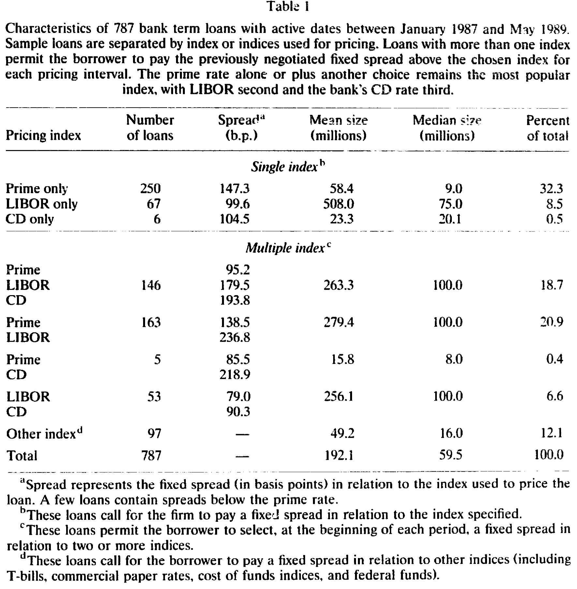
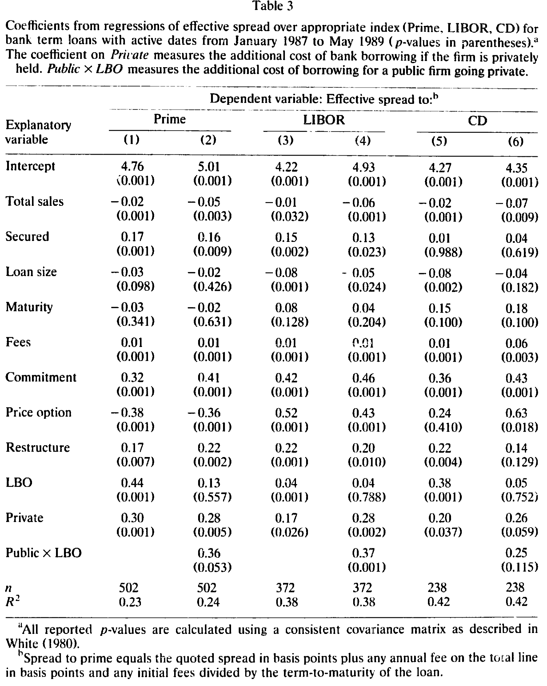
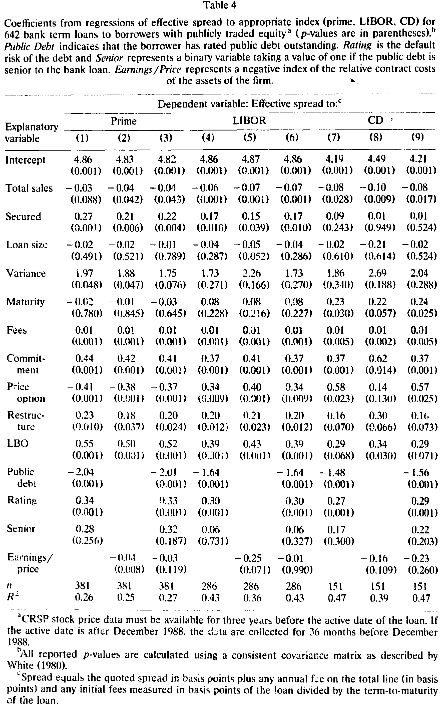
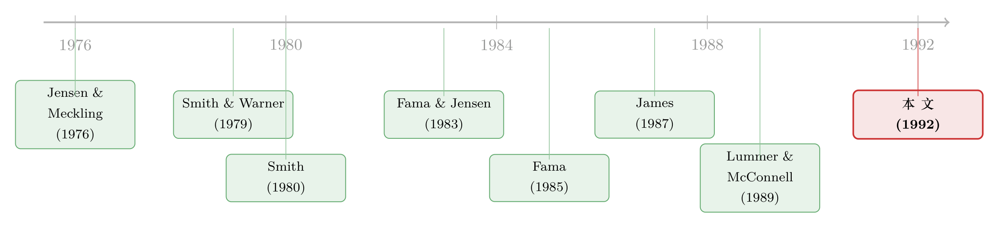

银行凭什么少收你利息？因为有别人替它盯着你
本文读的是 Booth (1992, Journal of Financial Economics)：一家公司若已经被股票市场、被评级机构、被次级债权人「盯着」，银行就可以少做一份监督——这份省下来的监督成本，会清清楚楚地反映在更低的贷款利差里。作者把这个想法叫做 交叉监督假说 (cross-monitoring hypothesis)，并用 787 笔大额商业贷款给它找到了证据。
1 引言：一笔贷款的利差里，藏着多少「看人」的成本？
先抛一个看似简单、其实没人认真回答过的问题：银行决定向你收多少利息时，到底在为什么定价？
教科书会告诉你：为违约风险定价。风险越大、抵押越少、期限越长，利差越高。这当然没错。可 Jensen and Meckling (1976) 早就提醒过我们，一家公司的资本结构，本质上是为了把 监督成本 (monitoring costs)、约束成本 (bonding costs) 和委托—代理问题带来的残余损失三者之和压到最低。（关于这条主线如何贯穿整个公司金融，可参见《债务这副药，为什么不能全吃？——重读 Jensen 和 Meckling 五十年》。）
既然「监督」是资本结构里实打实的一块成本，那么一个自然的推论是：银行替你做的那份监督，也应该是有价的。 监督做得多，成本就高，利差就该宽；监督做得少，利差就该窄。
问题在于，监督成本看不见、摸不着，过去几乎没人能把它从一笔贷款的利差里单独「拎」出来。这正是本文要做的事——而它切入的角度，相当聪明。
2 核心想法：你不必什么都自己看
本文真正的「核心一招」，是一个叫做 交叉监督 (cross-monitoring) 的概念。
它的逻辑是这样的：假如这家公司已经被别人盯着了——它的股票在公开市场上交易，分析师在写它，审计师在查它，评级机构在给它的债券打分——那么这些「别人」生产出来的信息，对银行同样有用。银行不必从零开始再监督一遍，它可以搭便车。
Fama and Jensen 讨论过「两方或多方互相监督」的好处。本文把这个想法又推进了一步：是多个索取权人（claimants）通过观察彼此对同一家公司（第三方）的监督而共同受益。
于是作者提出两个并列的假说，整篇文章都围着它们转：
- 交叉监督假说：如果公司已经「绑定」自己去生产对其他索取权人有价值、且可观察的信息，那么银行的监督成本会下降，利差会更低。具体到可检验的代理变量上——公开交易的股权、有评级的公开债务，都意味着外部监督的存在。
- 财务契约成本假说 (financial contract-cost hypothesis)：监督成本还取决于「用契约条款约束借款人行为」有多容易。对在位资产 (assets in place) 的行为，可以靠维护、处置之类的条款管住，便宜；对投资机会/成长机会的行为则很难写进契约，贵。所以高契约成本资产占比越高，利差越高。
注意这两个假说之间有一处微妙的张力，也是全文最需要小心处理的地方：公开债务是一把双刃剑。 一方面，评级机构替银行做了监督（交叉监督，利差↓）；另一方面，如果这笔公开债是优先级 (senior) 高于银行贷款的，银行的相对受偿顺位就被压低了，风险上升（利差↑）。到底哪种力量占上风？本文的赌注是：由于银行贷款期限通常短于公开债 [见 James (1987)]，交叉监督的好处会盖过顺位下降的坏处——但作者老老实实地把次级 (subordinate) vs. 优先拆开来分别检验。
3 一个借来的定价框架：把贷款看成「售后回租」
要把上面的故事变成可估计的回归，需要一个能把利差和各种成本挂钩的定价模型。本文没有自己造轮子，而是直接搬用了 Smith (1980) 的思路：一笔贷款，等价于一次带回购选择权的「售后回租」(sale-lease-back with an option to repurchase)。
直觉是这样：借款人把资产「卖」给银行，换回三样东西——(1) 贷款本金；(2) 一份租约，让借款人在贷款存续期内继续使用这些资产的服务流；(3) 一份看涨期权，允许借款人在 \(T\) 期末，以「承诺偿还额」为执行价，把资产「买回来」。把这个结构用期权定价的语言写出来，承诺的均衡贷款利率就可以写成一个一般形式（论文式 (1)）：
下面我把这一个最核心的方程拆开来标注——它是整篇实证的「地基」：
其中各个自变量的含义为：\(\hat{\imath}\) 是承诺利率，\(V\) 是公司资产现值，\(c\) 是抵押资产比例，\(X\) 是贷款规模，\(T\) 是到期期限，\(\sigma^2\) 是资产回报方差率，\(r\) 是无风险利率，\(\tau\) 是不违约情形下监督/处理贷款的交易成本，\(B\) 是违约情形下的预期破产成本。
绝大多数偏导数的符号，都可以直接从期权定价理论读出来。本文的关键，是把注意力死死钉在 \(\tau\) 上：监督成本的横截面差异，到底有没有反映进利率里？ 交叉监督和财务契约成本，都是在对 \(\tau\) 这一项「做文章」。
一个值得留意的处理：因为利率在合同里几乎总是报成「相对某个浮动指数（prime、LIBOR 或 CD）的固定利差」，所以模型里把无风险利率 \(r\) 那一块剥掉了——被解释变量本身就是利差，而不是利率水平。
4 识别策略与数据：用「利差」当尺子
4.1 数据
银行贷款是私下谈成的，合同条款的数据极难拿到。本文的数据来自向美国证券交易委员会 (SEC) 备案的贷款合同，外加《华尔街日报》、American Banker、Dow Jones News Retrieval、The Bank Letter 等来源，时间跨度为 1987 年 1 月至 1989 年 5 月，初始样本由 Loan Pricing Corporation 提供。
层层筛选（条款齐全、能在 CRSP 上找到股价或能确认私有身份、能从 COMPUSTAT/Disclosure/邓白氏拿到销售额）之后，最终样本是 787 笔定期贷款。由于依赖新闻报道和备案要求，样本明显偏向大额贷款和大公司——这一点后面我们会回过头来质疑。
如下表所示，样本贷款按定价指数被切开来看：以 prime 为单一指数的贷款最多（250 笔，平均利差 147.3 个基点），LIBOR 次之（67 笔，平均利差 99.6 个基点），CD 第三。多重指数（允许借款人在每个定价区间挑一个指数付既定利差）的贷款也占了相当比例。

Table I
787 笔贷款里，642 笔来自有公开交易股权的公司，145 笔来自私有公司。两组的贷款特征其实相当接近：平均到期期限约 60 个月（公开 59.0 vs. 私有 63.6 个月，均值差异的 t 值仅 1.26），约一半的贷款有抵押（51% vs. 57%）。最显著的差别在贷款用途上——私有公司里与「资本重组 (recapitalization)」相关的占比明显更高（19.3% vs. 2.0%，t 值 6.27）。
4.2 实证模型
被解释变量 Loan Spread 是「报价利差 + 各项费用」（折算成基点、相对 prime/LIBOR/CD）的自然对数。作者把分析分成两层：先做公开 + 私有全样本（控制变量较少，因为私有公司缺数据），再做仅公开公司子样本（能加入更多借款人特征）。
控制变量是一整套熟悉的面孔：Total Sales（资产规模代理）、Secured（是否有抵押）、Loan Size、Maturity、Var（股权回报方差，资产风险的代理）、Commitment、Price Option、Restructure、LBO、Rating 等。
真正承载假说的，是这几个检验变量 (test variables)：
- Private：是否私有公司。私有公司没有公开股权监督，按交叉监督假说，利差应该更高。
- Public × LBO：公开公司里为「上市转私有」而借的 LBO。这类公司虽是公开身份，却要按私有公司来监督，因此预期利差更高。
- Public Debt：是否有评级的公开债务。这是「债权人交叉监督」的代理——评级机构的监督若能盖过银行顺位下降的代价，利差应更低。
- Senior：公开债是否优先于银行贷款（用来把那把「双刃剑」拆开）。
- Earnings/Price：盈利/股价之比，作为「在位资产 / 成长机会」的代理。在位资产产生盈利，股价则同时反映盈利与成长机会；E/P 越高，意味着低监督成本的在位资产占比越高，利差应更低。
5 主要结果：省下来的监督，真的写进了利差
先看控制变量，方向基本都符合式 (1) 的预期：Total Sales 的系数为负（公司越大、相对贷款规模越大，利差越低）；Secured 的系数为正且在多数回归中显著——这与 Scott and Smith (1986)、Berger and Udell (1990) 一致，即更risky 的贷款才会被要求抵押，所以横截面上抵押与利差正相关。有意思的是，Loan Size 的系数与预期相反，为负，作者坦承这可能反映了贷款生产中的规模经济（或是大额贷款的某种议价）。

Table 3
而真正的「主菜」是检验变量。它们共同把交叉监督和财务契约成本两个假说撑了起来：
- 私有公司的利差更高——缺少股权市场的交叉监督，银行只能自己多看，成本转嫁给借款人。
- 有评级公开债的公司，借款成本更低——评级机构的监督替银行省了事，且这份好处盖过了顺位下降的代价。这正是交叉监督假说最直接的证据：监督，可以被「外包」给市场。
- Earnings/Price 越高，利差越低——在位资产越多、成长机会越少的公司，行为越容易用契约管住，监督成本越低。这是财务契约成本假说的证据。

Table 4
我必须诚实地标注一点：本文正文在「第 5 节结果」处被截断，Table 3 / Table 4 里检验变量的具体系数、t 值我无法从手头文本中逐一读出。因此上面只报告了论文明确陈述的符号与显著性方向，而没有编造任何具体的系数大小。读者若要精确数值，请回到原文表 3、表 4。
把这几条拼起来，本文的核心贡献就清楚了：它第一次把「监督成本」这个一直停留在理论里的变量，从一笔笔真实贷款的利差中实证地分离了出来，并且证明了银行确实在为「别人替它做的监督」打折。这一步，是 Fama (1985)、James (1987) 那批「银行贷款很特殊」的猜想，少有的、落到价格层面的直接验证。
6 文献脉络
这条研究的源头，是 Jensen and Meckling (1976) 把监督、约束与代理成本写进资本结构的那一刻。紧接着，Smith and Warner (1979) 系统地论证了债券契约（covenants）为什么存在、以及它们如何约束借款人行为——这给「财务契约成本假说」提供了直接的弹药。
然后，Smith (1980) 给出了把贷款看成「带回购期权的售后回租」的定价框架，本文的式 (1) 就是从这里借来的。与此并行，Fama and Jensen (1983a, b) 阐明了组织在监督上「避免重复、追求专业化」的逻辑，这正是交叉监督思想的土壤。
但真正把读者带到本文门口的，是 Fama (1985)、James (1987)、Lummer and McConnell (1989) 这一波关于「银行贷款的独特性」的研究——它们猜测：有公开资本市场渠道的公司之所以还要借银行贷款，是为了那份附带的监督服务。本文所做的，正是给这串猜想补上价格证据；同时它也呼应了 Smith and Watts (1990) 关于「监督/约束成本与公司投资机会集共同决定」的判断。

（关于公司在「银行债 vs. 公开债」之间如何取舍这条相邻线索，可参见《借公开债，是为了躲开银行的眼睛》；关于银行监督为何是一道护城河，可参见《银行的「信息」，凭什么是一道护城河？》。）
评论与延伸（Q&A + 研究方向）
(a) 几个可能的疑问
Q：交叉监督，跟单纯的「风险更低」到底有什么区别？
关键在于，本文已经把违约风险的常规代理变量——资产规模、抵押、股权方差 Var、贷款期限、评级本身——都放进了回归里做控制。Public Debt、Private、E/P 这些检验变量在控制住风险之后仍然显著，说明它们捕捉的不是「更安全」，而是「监督更省事」。当然，代理变量永远无法完美剥离两者，这正是识别上最该警惕的地方。
Q：有评级公开债既能交叉监督、又会压低银行顺位，作者怎么知道是前者赢了？
这正是 Senior 变量的用处。作者把「公开债是否优先于银行贷款」单独拎出来：如果是顺位效应主导，优先公开债应推高利差；如果是交叉监督主导，整体应压低利差。结果支持后者占上风——作者的解释是银行贷款期限短 [James (1987)]，受顺位下降的伤害有限。
Q：样本「偏向大公司、大贷款」，会不会让结论只在巨头身上成立？
会，这是本文最实在的外部有效性短板。能上新闻、能向 SEC 备案的，本就是大额贷款。小企业贷款的监督技术（软信息、关系型贷款）与大公司完全不同，交叉监督的逻辑（依赖公开市场信息）在小企业身上可能根本不适用。
Q：用 Earnings/Price 当「在位资产 vs. 成长机会」的代理，可信吗？
这是一个粗糙但有道理的代理：在位资产产生当期盈利，股价同时反映盈利与成长机会，所以 E/P 高 ≈ 在位资产占比高。但 E/P 也会被预期增长率、贴现率、暂时性盈利冲击污染——它更像一个「方向对、噪声大」的代理，结论应被视作暗示性的而非决定性的。
Q：私有公司利差更高，会不会只是因为它们本来就更难评估、信息更不透明？
这两者其实很难分。信息不透明本身就是「需要更多监督」的一种表现，所以从交叉监督的视角看，二者并不矛盾——私有公司缺的恰恰是公开市场替银行生产的那份信息。但若有人想把「不透明溢价」和「缺失交叉监督」分开，就需要更细的识别。
Q：被解释变量为什么取对数、还要把费用折进利差？
取对数是为了缓解利差的非线性与右偏；把承诺费、年费按期限摊进利差，是为了得到一个「有效借款成本」，避免银行把价格从利率挪到费用上而被漏掉。作者也检查了 Durbin-Watson 与残差，拒绝了大多数变量的非线性设定。
(b) 几个可能的研究问题与提案
1. 把交叉监督搬到公司债二级市场流动性上
【经济故事】本文说「被市场盯着」会压低银行贷款利差；一个自然的延伸是：被更多投资者持有、被更多分析师覆盖的发行人，其公司债的流动性是否也更好、利差是否更低？机制是同一个——外部监督降低了信息不对称。 【可行性】高。用 TRACE 成交数据 + Mergent FISD + I/B/E/S 分析师覆盖，构造发行人层面的「被监督强度」，识别上可借助分析师覆盖的外生变动（如券商合并导致的覆盖中断）。数据成熟、识别可做。
2. 外资持有人是「监督者」还是「噪声」？
【经济故事】如果交叉监督的本质是「可观察的外部监督」，那么大型机构、尤其是外资持有人的进入，理论上应压低该公司新发债务的利差。但外资也可能是「追涨、赖着不走」的（参见本博客关于外资持有人的多篇讨论），未必提供监督。 【可行性】中。需要发行人层面的持有人结构（如 eMAXX、13F、各国托管数据）与新发债利差匹配；识别外资进入的外生性是难点，可考虑指数纳入（如纳入某全球债券指数）带来的被动外资冲击。
3. 评级机构「监督价值」的清洁实验
【经济故事】本文把「有评级公开债」当作债权人交叉监督的代理。若评级真的提供监督价值，那么当某发行人首次获得评级、或评级机构覆盖因外生原因中断时，其后续银行贷款利差应有可观测的跳变。 【可行性】中到高。可用首次评级事件做事件研究，或利用某评级机构退出某细分市场作为准自然实验；难点在于首次评级本身是内生选择（公司挑时机去评级），需要工具或断点设计。
4. 把「财务契约成本」量化进契约条款本身
【经济故事】本文用 E/P 间接代理「资产是否易于用契约约束」。更直接的做法，是直接读贷款合同里的 covenant 数量与类型（投资限制 vs. 维护条款），检验成长型公司是否真的更难写投资类契约、从而支付更高利差。 【可行性】高。DealScan + 近年可用的 covenant 文本数据（甚至用 LLM 抽取合同条款）可以直接构造契约成本变量；这是把 Smith and Warner (1979) 的描述性发现推进到因果层面的好机会。
我的判断
本文的贡献是「概念上的一击」：它把一个一直只存在于代理理论里的抽象量——监督成本——找到了一个可观测的价格出口（贷款利差），并用交叉监督这个角度，干净利落地解释了「为什么有公开市场渠道的公司还要借银行钱、且能借得更便宜」。在 1992 年，这是为「银行特殊论」补上的、难得的价格证据。
但要替它把丑话说在前面：识别基本是横截面相关，不是因果。 Private、Public Debt、E/P 这些都是公司的选择而非随机分配——一家公司是否上市、是否发评级债、资产结构如何，都与它的根本风险、信息环境高度内生。作者已经尽力控制了能想到的风险代理，但「交叉监督压低了利差」与「本来就更安全/更透明的公司既会被市场盯上、又能借到便宜钱」这两种解释，在这套数据里很难彻底分开。再加上样本严重偏向大公司大贷款，外部有效性也要打折。
我接下来最想看到的，是有人用一个外生的「被监督强度」冲击（指数纳入、券商覆盖中断、首次评级），把交叉监督从这团内生性里真正洗出来——并且把战场从贷款利差扩展到公司债的二级市场流动性上。那才是把这篇 1992 年的好想法，带进现代信用市场的正确方式。
参考文献
- Berger, Allen N. and Gregory F. Udell (1990). Collateral, loan quality, and bank risk exposure. Journal of Monetary Economics 25, 21–42.
- Fama, Eugene F. (1985). What's different about banks. Journal of Monetary Economics 15, 29–36.
- Fama, Eugene F. (1990). Contract costs and financing decisions. Journal of Business 63, S71–S91.
- Fama, Eugene F. and Michael Jensen (1983a). Agency problems and residual claims. Journal of Law and Economics 26, 327–349.
- Fama, Eugene F. and Michael Jensen (1983b). Separation of ownership and control. Journal of Law and Economics 26, 301–325.
- James, Christopher (1987). Some evidence on the uniqueness of bank loans. Journal of Financial Economics 19, 217–235.
- Jensen, Michael and William Meckling (1976). Theory of the firm: Managerial behavior, agency costs, and ownership structure. Journal of Financial Economics 3, 305–360.
- Lummer, Scott L. and John J. McConnell (1989). Further evidence on the bank lending process and the capital market response to bank loan agreements. Journal of Financial Economics 25, 99–122.
- Scott, James A. and Terrance C. Smith (1986). The effect of the bankruptcy reform act of 1978 on small business loan pricing. Journal of Financial Economics 16, 119–140.
- Smith, Clifford W. (1980). On the theory of financial contracting: The personal loan market. Journal of Monetary Economics 6, 333–357.
- Smith, Clifford and Jerold Warner (1979). On financial contracting: An analysis of bond covenants. Journal of Financial Economics 7, 117–161.
- Smith, Clifford and Ross Watts (1990). The investment opportunity set and corporate policy choices. Working paper, University of Rochester.